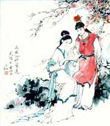

名称：
集数：
播出时间：
百家讲坛 《红楼梦》八十回后真故事
17
2010年03月11日
众所周知，世界上似乎没有哪一本书能像《红楼梦》这样引起人们喋喋不休的争论，也没有哪一本书能像《红楼梦》这样引发那么多人关注和研究。究其原因，最主要的大概就是曹雪芹留下了一本不完整的书稿，这就给后人留下了巨大的话语空间，《红楼梦》就像断臂的维纳斯一样，多少人在想象着它完整的样子。那么人们是不是真的就不能窥见《红楼梦》的全貌了呢？著名作家刘心武先生通过多年对《红楼梦》的研究，他认为全本的《红楼梦》是存在过的，《红楼梦》八十回后的故事是可以探佚出来的，高鹗续写的《红楼梦》后四十回不符合曹雪芹的原笔原意。那么八十回后曹雪芹的《红楼梦》写的是什么？全本的《红楼梦》真的存在过吗？著名作家刘心武先生为您讲述《红楼梦》八十回后的真故事。